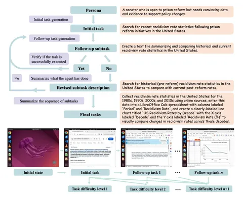
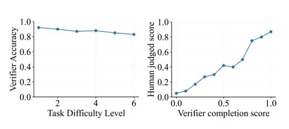
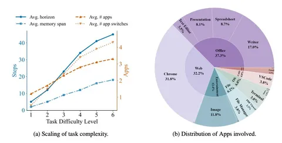

Сегодня разбираем статью о генерации данных для computer-use-агентов, которые умеют «тыкать кнопки» в графическом интерфейсе. Чтобы обучать такие модели, как на стадии cold star, так и на стадии RLVR, нужен датасет исходных задач, по которым будут генерироваться траектории для cold start и роллауты для RLVR. Соответственно, встаёт задача генерации задач. Статья предлагает одно из возможных решений.
Авторы начинают с обзора разных способов генерации данных. Отдельно останавливаются на средах, таких как WebArena, OSWorld, WindowsArena и других. В работе концентрируются на OSWorld, так как она предназначена для десктопа, имеет браузер, то есть может работать в вебе.
Что заявляют в основных результатах:
• Сделали пайплайн генерации исходных задач для OSWorld — причём достаточно сложных и разнообразных.
• За счёт пошаговой генерации могут добиться большей сложности задач, чем при генерации задачи за один шаг.
• На основе сгенерированных данных построили бенчмарк.
Пайплайн генерации состоит из нескольких агентов, которые реализованы одной и той же LLM (брали GPT-4.1), но с разным системным промптом (см. скриншот 1).
1. Чтобы получить более разнообразные задачи, используют датасет PersonaHub, где описаны разные люди, их социальное положение и другая информация. Task-proposal получает эту информацию вместе с промптом и генерирует исходную задачу.
2. Задача отправляется в task-executor, который по шагам выполняет её. Агент видит задачу и предыдущее действие, и на основе этого генерирует следующее. Таким образом создаётся траектория.
3. Task-verifier смотрит, выполнил ли task-executor задачу полностью. Если выполнил — переходим к дальнейшим шагам. Если нет, task-verifier оценивает, до какого шага она выполнена, и передает эту информацию дальше.
4. Задача может быть либо невыполнимой в принципе, либо слишком сложной для агента. Task-reviser переформулирует её так, чтобы она стала выполнимой. То есть фактически подстраивает под уже сгенерированную траекторию.
5. Сделанная валидной задача или изначально валидно сгенерированная отправляется в follow-up task proposal, который её усложняет.
6. Task-summarizer переформулирует последовательность всё более усложняющихся задач от самой простой до текущей в единую задачу. В работе делали шесть тёрнов усложнения, соответственно, в датасете получаются задачи шести уровней сложности.
Авторы приводят анализ получившегося датасета. Берут 100 задач, примерно по 16 на каждый уровень сложности, и оценивают по четырём критериям:
1) разрешимость и реалистичность — можно ли решить эту задачу стандартными тулами;
2) когерентность — каждая последующая подзадача логически следует из предыдущей;
3) релевантность персоне;
4) точность верификатора — насколько правильно он определяет, решена ли задача.
Отдельно авторы рассматривают калибровку верификатора. Приходят к выводу, что он сохраняет точность для разных уровней сложности (см. скриншот 2).
В одном из экспериментов пытались «сломать» верификатор. Для этого брали проверенные траектории и делали два типа изменений: 1) немного и незаметно меняли цель в задаче таким образом, чтобы траектория переставала решать эту задачу; 2) меняли UI, но так чтобы вердикт оставался прежним. В первом случае, где все задачи должны были детектиться как fail, 12% определялись как success — не так уж мало, но в целом приемлемо. Во втором случае 94% случаев верно расценивались как успех.
Сделали оценку на моделях GPT-4o-mini и Gemini и Claude Sonnet. Брали по 50 задач каждого уровня сложности и сравнивали с человеческой разметкой. Лучшие результаты получили у Claude Sonnet и GPT-4o-mini.
Также проанализировали частые ошибки. В их числе неточный клик мышки, клик в другой элемент, а также “lack of recovery from error” — когда после мисклика модель зацикливается.
Разбор подготовил
CV Time


